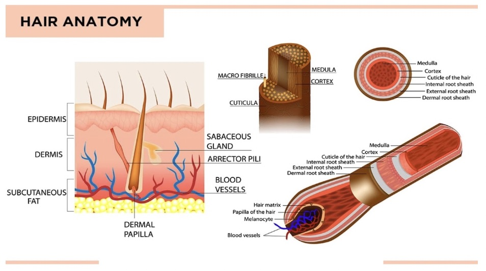
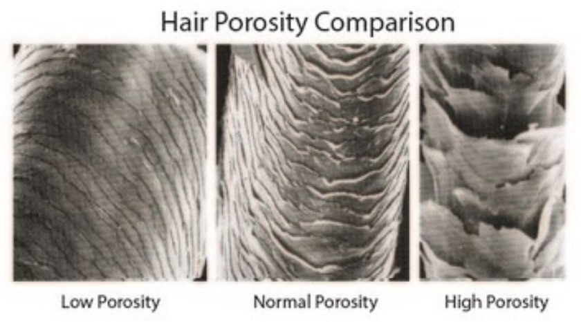

The Science of Hair
Getting To the Root of Things
Regardless of the location, all hair begins the same way. Hair growth starts in the dermis layer of the skin. This layer is below the epidermis which is the layer that we can see. The dermis layer is thicker than the epidermis and has all of oil and sweat glands, hair follicles, connective tissues, nerve endings, and lymph vessels (Watson, 2018). Hair growth begins in the Anagen phase, which lasts for approximately 4 to 6 years for hair growing from the scalp. It is during the Anagen phase that the hair actually grows. Basically, hair is created by protein cells in the hair bulb which is located at the base of the hair follicle. Throughout this phase the hair grows up though the follicle and becomes visible from the epidermis, the visible part of the hair is called the shaft. During this phase scalp hair grows at a rate of about 1cm every 28 days (WebMD 2010). Once the hair reaches the end of the Anagen phase it transitions to the next phase in the growth cycle.

The second phase in the hair growth cycle is called the Catagen phase, this phase lasts for approximately 10 to 20 days. During this phase the hair follicles begin to shrink and hair growth slows because the strand detaches from the bulb which stops blood flow, robbing the strand of oxygen and nutrients.
The third phase of the hair growth cycle is called the Telogen phase. This phase lasts for approximately 3 months and it is during this time that the hair is at rest. There is no growth happening because the cells are preparing to start the growth process all over again as new hairs have started to form in the follicles.
The final stage in the hair growth cycle is called the Exogen phase. This phase typically lasts 2 to 5 months and during this time it is normal to lose 50 to 100 hairs per day. Because the hair on our head cycles through these phases at different times we rarely notice unless the shedding of hair is outside of the norm. The Exogen phase is often helped along by washing and brushing but like all of the other phases can be impacted by factors such as health, diet, age, genetics, and lifestyle.
Density
One important characteristic of hair that many are concerned about is its density. Density refers to how many strands of hair grow per square inch on your head. The density of a person’s hair is determined by genetics and falls within ranges of high, medium, and low. Hair density will vary greatly depending on such factors as ethnicity and age.
Porosity

These different textures of hair not only look different, they may also behave differently in terms of their porosity. Porosity refers to how well the hair absorbs and retains moisture based on the position of the hair cuticle, which is the outer layer of the hair strand. There are three levels of porosity and just as with hair texture, porosity can be different in different parts of the head. High porosity means the hair easily absorbs moisture, as the cuticles are spaced more widely apart. Unfortunately, this hair type also loses moisture more easily because of the widely spaced cuticles. Medium porosity hair means the hair holds on to and retains moisture for the longest period of time because the cuticles are more evenly spaced. This hair type is more inclined to take color well and look shiny and glossy longer than other hair types. Low porosity hair has cuticles that are tightly packed together and as a result the hair has a harder time absorbing moisture so during the shampoo process it’s hard for water to saturate the hair. Because the cuticles are so close together products aren’t absorbed as easily, and it typically takes the hair longer to dry.